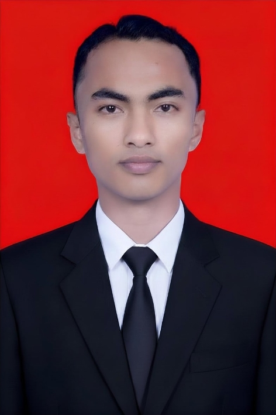

Menjelaskan pengertian dan empat unsur utama berpikir komputasional: dekomposisi, pengenalan pola, abstraksi, dan algoritma.
Menerapkan dekomposisi untuk memecah suatu masalah nyata menjadi bagian-bagian yang lebih sederhana.
Menyusun algoritma berupa langkah-langkah logis dan berurutan untuk menyelesaikan suatu persoalan sehari-hari.
Mengevaluasi hasil penyelesaian masalah menggunakan konsep berpikir komputasional secara mandiri maupun kelompok.
Memecah masalah besar dan rumit menjadi bagian-bagian kecil yang lebih sederhana, sehingga setiap bagian dapat diselesaikan satu per satu.
Menemukan kesamaan, pola, atau tren dari beberapa masalah agar penyelesaiannya bisa digunakan kembali untuk masalah serupa.
Berfokus pada informasi yang penting saja dan mengabaikan detail yang tidak diperlukan agar masalah lebih mudah dipahami.
Menyusun langkah-langkah logis dan berurutan sebagai rencana penyelesaian masalah, sebelum dituangkan ke dalam tindakan nyata.
